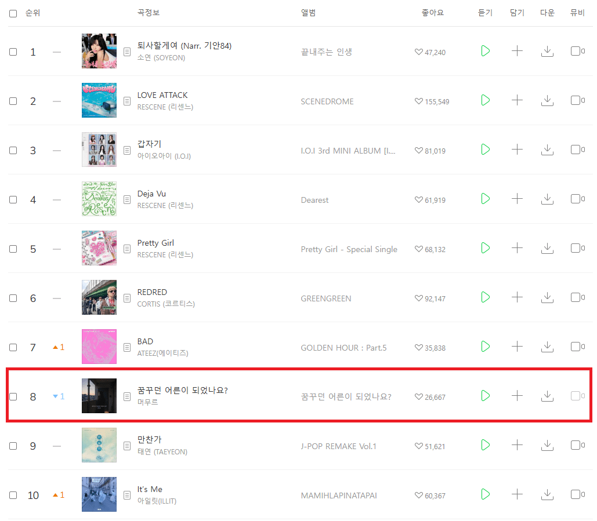
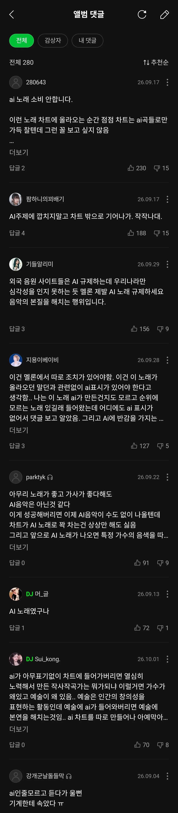

멜론 차트 8위에 AI 자작곡 랭크인

엄청 까이고 있는중 ㄷㄷ

멜론 차트 8위에 AI 자작곡 랭크인

엄청 까이고 있는중 ㄷㄷ
AI노래나 그림 지루하고 현학적인 이유 필요없이 걍 꼬움
맛만 좋음됐지 뭐 표절도아니고 ㅋㅋ
다 먹어놓고 부정하면 뭐함 ㅋㅋㅋㅋ
시대가 달라지는건 인정해야지
최근에 괜찮은 밴드 노래가 있길래 봤더니 ai여서 충격먹음 어쩐지 음질이 안좋더라
이제 쇼 해주는 연주자만 남는건가